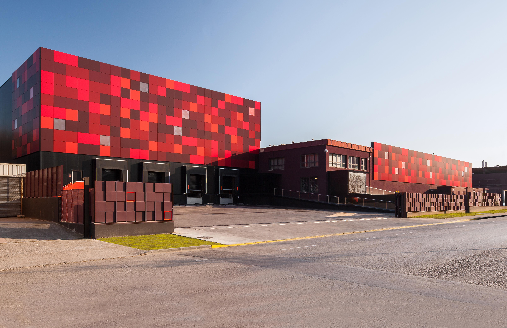
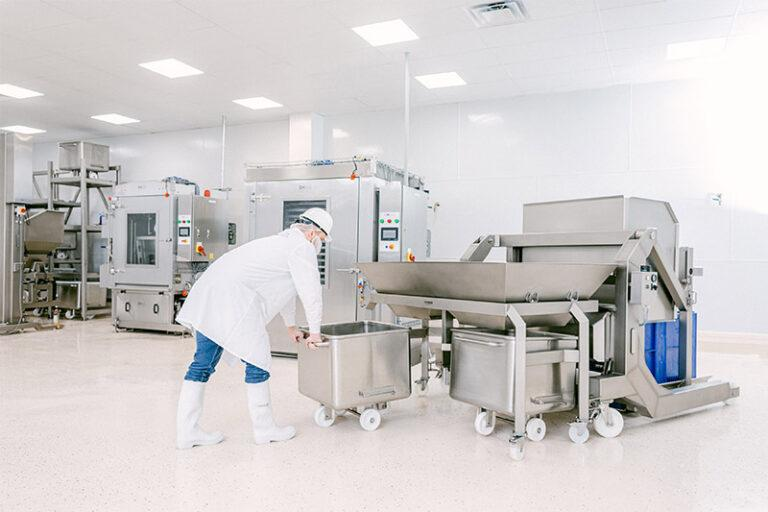
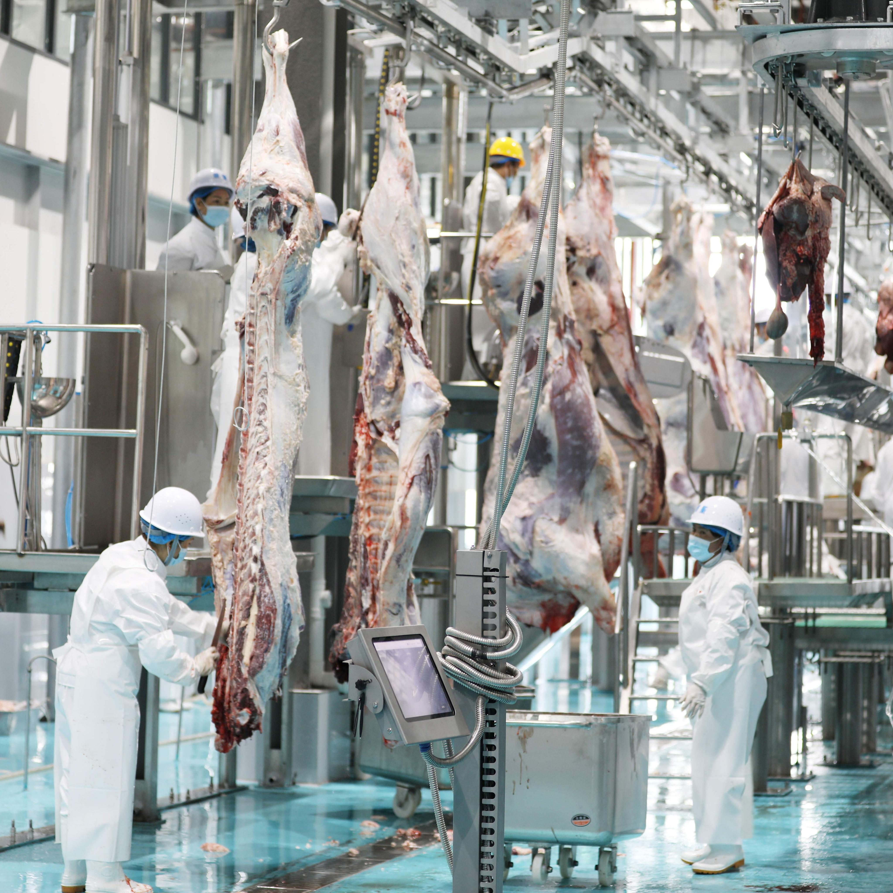
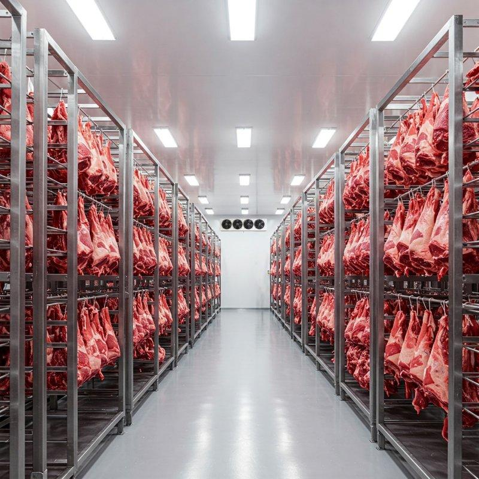
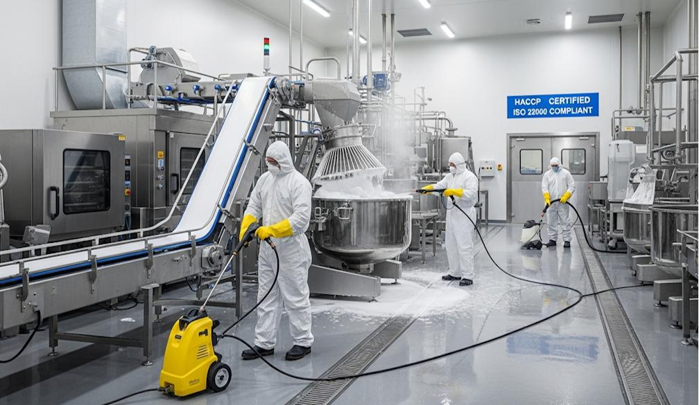
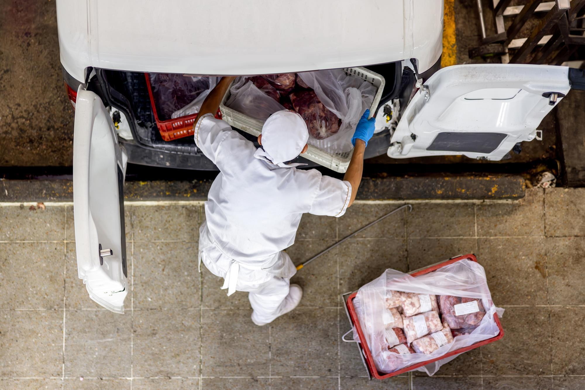
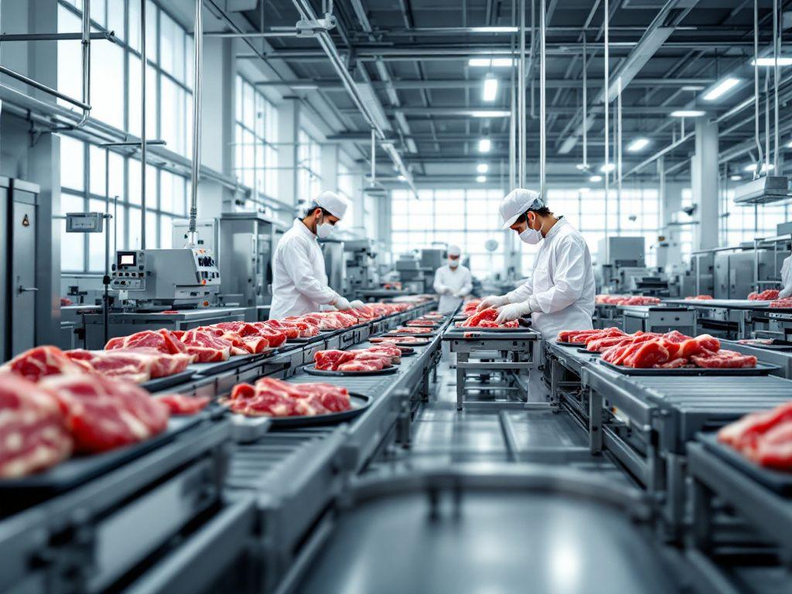
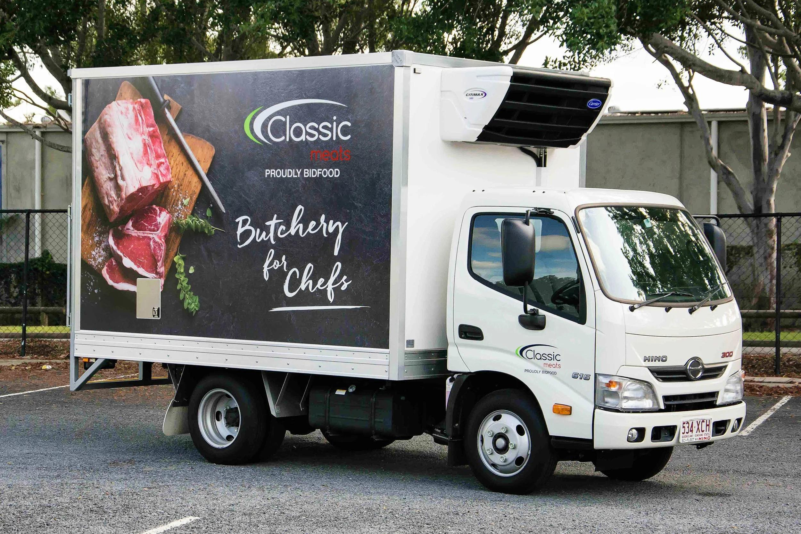

Premium Slaughter House operates with professionally organized facilities
designed to support safe, hygienic, and efficient meat processing operations.
Our facility includes dedicated areas for slaughtering, meat processing,
quality inspection, cold storage, packaging, and distribution. Each area is
managed with attention to cleanliness, organization, and product quality.
Our goal is to maintain a smooth workflow while providing customers with
fresh and hygienically processed halal meat products.

Premium Slaughter House Main Facility
Modern Meat Processing Facility
Our meat processing facility is designed to support efficient and hygienic
handling of meat products. After slaughtering, meat is transferred to
designated processing areas where it can be prepared, inspected, and
organized according to customer requirements. Proper workflow and clean
processing areas help our team maintain product quality and freshness
throughout the processing stage.

Modern Meat Processing Facility
Professional Slaughtering Area
Our slaughtering area is organized to support a controlled and hygienic
slaughtering process. Trained staff follow appropriate halal procedures and
maintain cleanliness throughout the operation. The area is managed carefully
to help ensure that animals and meat products are handled responsibly while
maintaining appropriate food safety and hygiene practices.

Professional Halal Slaughtering Area
Temperature-Controlled Cold Storage
Our cold storage facility provides a controlled environment for storing meat
products before packaging and distribution. Maintaining suitable temperatures
helps preserve freshness and product quality during storage. Products are
organized carefully within the storage area so that orders can be handled
efficiently and prepared for delivery when required.

Temperature-Controlled Cold Storage Facility
Hygiene and Sanitation Area
Cleanliness is an important part of our daily operations. Our facility
includes dedicated procedures and areas for maintaining hygiene and
sanitation throughout meat processing activities. Equipment, work surfaces,
and processing areas are regularly cleaned and maintained to help reduce
contamination risks and support a safe working environment.

Hygiene and Sanitation Practices
Professional Packaging Department
Our packaging department prepares meat products for safe storage,
transportation, and distribution. Products are packaged using suitable
food-grade materials and handled carefully to help maintain freshness and
quality. Orders can be organized according to customer requirements, making
the products easier to store, transport, and distribute.

Professional Meat Packaging Department
Quality Control and Inspection Area
Our quality control area supports inspection and monitoring throughout the
processing operation. Meat products are checked at appropriate stages to help
maintain freshness, cleanliness, and consistent quality. Our team pays close
attention to product handling and processing procedures so that customers
receive products prepared according to our quality requirements.

Quality Control and Inspection Area
Delivery and Distribution Facility
Our distribution area supports the preparation and dispatch of customer
orders. After processing, inspection, packaging, and storage, orders can be
organized for transportation to homes, restaurants, hotels, supermarkets,
and other customers. Our delivery operations are planned to help maintain
product quality while ensuring orders are handled efficiently.

Meat Delivery and Distribution Service
Why Our Facilities Matter
Our facilities are organized to support every important stage of our
operations, from halal slaughtering and hygienic processing to quality
inspection, cold storage, packaging, and distribution. Having dedicated
areas
for different activities helps our team maintain an organized workflow and
consistent product handling. We continuously focus on cleanliness, efficiency,
and quality so that our customers can receive fresh and professionally
processed halal meat products.
Organized Processing Areas
Dedicated Cold Storage
Professional Packaging Department
Quality Inspection Area
Hygiene and Sanitation Procedures
Organized Distribution System
Professional Equipment and Staff
Hygiene & Safety
Daily Equipment Cleaning
Staff Safety Uniforms
Food-Grade Processing Area
Temperature Monitoring
Regular Quality Inspection
Sanitized Workstations
Facility Features
Facility Features and Operations
Facility
Purpose
Status
Processing Area
Meat Processing
Operational
Cold Storage
Fresh Meat Storage
Operational
Quality Lab
Quality Inspection
Operational
Packaging
Food Packaging
Operational
Delivery Fleet
Transportation
Operational
Visit Our Facility
Premium Slaughter House
Industrial Area
Lahore, Pakistan